조경기사 (2003-03-16 기출문제)
1과목: 조경사
1. 창덕궁 후원에 있는 부용정(芙蓉亭)정원의 형식과 유사한 정원은?
- 강릉 선교장의 활래정(活來亭)정원
- 달성 하엽정 정원
- 담양 남면의 소쇄원(瀟灑園)정원
- 보길도의 부용동(芙蓉洞) 세연정 정원
(정답률: 23%)

2. 조선시대에 만들어진 지당(池塘)중심의 정원들 중 신선 사상을 배경으로 하는 전통정원 양식과 거리가 가장 먼 것은?
- 경복궁의 경회루정원
- 창경궁의 통명전정원
- 강릉 선교장의 활래정정원
- 남원의 광한루정원
(정답률: 62%)
3. 다음은 이탈리아-르네상스식 정원 가운데 바로크식 특징을 가진 대표적인 정원인데 이에 속하지 않는 것은?
- 살비아티장(Villa Salviati)
- 란셀로티장(Villa Lancelotti)
- 이솔라 벨라장(Villa Isola Bella)
- 알도 브란디니장(Villa Aldobrandini)
(정답률: 39%)
4. 아래는 영국의 자연풍경식 정원수법을 완성시키는데 공이 컸던 사람들이다. 그 배열에 있어서 올바른 것은 어느것 인가?
- 브리지맨 - 윌리엄챔버 - 켄트 - 브라운
- 브라운 - 켄트 - 윌리엄챔버 - 브리지맨
- 브리지맨 - 켄트 - 브라운 - 윌리엄챔버
- 윌리엄챔버 - 브리지맨 - 브라운 - 켄트
(정답률: 60%)
5. 다음 중 영국 Tudor왕조 때의 Country House는?
- Stowe House
- Stourhead
- Hampton Court
- Levens Hall
(정답률: 56%)
6. 인도 무갈제국의 정원에 관한 설명 중 옳은 것은?
- 이슬람교가 동진하여 전파한 이슬람 정원이어서 힌두족의 전통은 나타나지 않는다.
- 기후, 식생 등 조건이 정원발달을 저해하여 자연히 페르시아 이슬람정원들보다 소규모의 정원이다.
- 지역적으로 볼 때 아그라와 델리에는 아크바르대제의 능묘가, 캐시미르에는 샬리마르 바(Shalimar Bagh), 타지마할이 있다.
- 무갈 정원의 유형은 별장을 중심으로 발달한 바(Bagh)와 정원과 묘지를 결합한 형태의 것으로 나누어지고 산간 지방에는 노단식이, 평지에는 평탄원이 발달했다.
(정답률: 44%)
7. 18세기 영국의 낭만적 이상주의(Romantic Idealism)가 미국에 옮겨져 이룩된 낭만적 교외(Romantic Suburb)는?
- Radburn
- Riverside
- Reston
- Davis
(정답률: 54%)
8. 버큰헤드 파크(Birkehead Park)에 대한 설명 중 틀린 것은?
- 최초의 시민의 힘으로 이루어진 공원
- 그린스워드(Greensward)안으로 만들어진 공원
- 사적 주택단지와 공적 위락용으로 이분화된 공원
- 조셉 팩스턴이 설계한 공원
(정답률: 60%)
9. 모모야마(桃山)시대 싸리나무나 대나무 가지로 울타리를 두르고 소공간을 자연 그대로의 규모로 꾸민 정원 양식은?
- 정토정원
- 임천정원
- 다정
- 침전식정원
(정답률: 66%)
10. 조선시대의 주택정원 공간에서 가장 중요시되었던 공간이 라고 볼 수 있는 것은?
- 전정과 후정
- 전정과 중정
- 후정과 사랑마당
- 후정과 중정
(정답률: 70%)
11. 고려초기에 조성한 강원도 춘성군 청평사 문수원 입구의 남지에 대한 설명으로 알맞는 것은?
- 네모꼴로 섬이 하나 있다
- 네모꼴로 섬은 없고 삼산석이 있다
- 사다리꼴로 섬이 하나 있다
- 사다리꼴로 섬은 없고 삼산석이 있다
(정답률: 67%)
12. 다음은 어느 별장에 도입된 정원 시설인가?
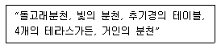
- 알도브란디니장(Villa Aldobrandini)
- 에스테장(Villa d'Este)
- 감베라이아장(Villa Gamberaia)
- 란테장(Villa Lante)
(정답률: 63%)
13. 그리이스의 아도니스원에 대한 설명으로 적합한 것은?
- 신을 모신 정원으로 열식된 수목에 의해 위요된 공간
- 물이 가장 중요한 요소로서 등장
- 후일의 옥상정원으로 발전
- 식물의 도입은 화훼류 우선
(정답률: 70%)
14. 창덕궁의 정원에 관련된 다음의 설명 중 잘못된 것은?
- 낙선제 후원의 마당에는 소영주라 음각된 괴석대가 있다
- 부용정의 북쪽 언덕위에 세워진 주합루의 출입문은 어수문이다
- 연경당 선향제의 후원에는 4방 1간의 정자인 농수정이 있다
- 옥류천 지역에는 방지안의 네모의 섬에 세워진 청심정이라는 모정이 있다
(정답률: 45%)
15. 무어 양식의 극치라고 일컬어지는 알함브라(Alhambra)궁은 여러개의 중정(Patio)이 있다. 이 중 4개의 수로에 의해 4분되는 파라다이스 정원 개념을 잘 나타내고 있는 중정은?
- Alberca Patio(연못의 중정)
- Daraxa Patio(Lindaraja Patio)
- Reja Patio(창격자 중정)
- Lions Patio(사자의 중정)
(정답률: 67%)
16. 고구려의 청암리사지의 공간구성은?
- 오성좌배치
- 풍수지리적 배치
- 산지가람형
- 자연조화형
(정답률: 48%)
17. 중국 정원에서 볼 수 있는 회랑이나 수경(水景)에 면해 있는 벽면에 설치하는 시설로써 유리가 설치되지 않고, 일반적으로 흰색으로 칠해져 있는 창(窓)으로 설치된 벽(壁)의 내· 외부에서 정원이 보여졌을 때 아름답다. 이 시설을 무엇이라 하는가?
- 花窓(화창)
- 漏窓(루창)
- 空窓(공창)
- 透窓(투창)
(정답률: 47%)
18. 1930년대 미국`의 토마스 처치는 주택정원의 형태를 정하는데 세가지 원칙을 이론화하였는데, 그 원칙에 해당되지 않는 사항은 무엇인가?
- 고객의 특성, 즉 인간의 욕구와 개인적인 요구
- 부지의 조건에 따른 관리와 시공, 재료와 식재의 기술
- 요구 조건을 만족시킬 수 없을 때는 순수예술의 영역에서 공간을 표현
- 부지 주변의 적합한 생태적인 조건에 순응되게 표현
(정답률: 22%)
19. 일본의 조경문화에 있어 불교의 영향과 거리가 먼 것은?
- 삼존식
- 수미산상
- 세수분
- 구산팔해석
(정답률: 66%)
20. 중국의 조경에 있어 시대별로 맞게 연결된 것은?
- 남송 - 서호
- 청 - 태호
- 당 - 태액지
- 한 - 곤명호
(정답률: 30%)
2과목: 조경계획
21. 녹지자연도(DGN:degree of green naturality)분석의 목적으로 보기 어려운 것은?
- 녹지공간의 자연성 지표 설정
- 개발 혹은 보존여부의 검토를 위한 기초자료의 제공
- 산림경관의 구도적 유형분류
- 인간영향(human impact)정도의 파악
(정답률: 18%)
22. 여가공간계획시 이용자수 추정에 사용되는 최대일률(最大日率)의 2계절형은 다음 중 어느 것인가?
- 1/30
- 1/40
- 1/50
- 1/60
(정답률: 64%)
23. 동선계획에서 고려되어야 할 내용과 거리가 먼 것은?
- 부지 내 전체적인 동선은 가능한 막힘이 없도록 계획한다.
- 주변 토지이용에서 이루어지는 행위의 특성 및 거리를 고려하여 적절하게 통행량을 배분한다.
- 기본적인 동선체계로 균일한 분포를 갖는 격자형과 체계적 질서를 가지는 위계형으로 구분할 수 있다.
- 도심지와 같이 고밀도의 토지이용이 이루어지는 곳은 위계형 동선이 효율적이다.
(정답률: 61%)
24. 경계를 표시하는 상징적 요소인 담장이나 문주의 설치로 주민들에게 높은 소유의식을 부여하는 방법은 환경심리학의 어떤 연구 결과가 응용된 예인가?
- 개인적 공간(personal space)
- 영역성(territoriality)
- 혼잡(crowding)
- 반달리즘(vandalism)
(정답률: 62%)
25. 조경에 관련되는 학문 영역 중, 컴퓨터 그래픽스와 기호 표시법 등 여러 기법과 관련이 있는 학문영역은?
- 자연적 요소
- 사회적 요소
- 공학적 지식
- 설계방법론
(정답률: 40%)
26. 다음 중 리커트척도(Likert scale)에 대한 설명이 잘못된 것은?
- 자유 응답 설문의 한 종류이다.
- 태도를 측정하는데 많이 쓰인다.
- 동일한 사항에 대하여 몇가지 질문을 한 후 이 결과를 종합한다.
- 응답결과는 5단계의 척도로 구성되어진다.
(정답률: 41%)
27. 레크레이션 계획은 접근방법에 따라 서로 다른 결과를 낳을 수 있다. 자연공원에 대한 계획의 접근방법으로 가장 타당한 것은?
- 자원형
- 활동형
- 경제형
- 행태형
(정답률: 59%)
28. 100세대인 주택단지의 어린이 놀이터 면적은 어느 정도가 가장 적당한가?
- 150m2
- 300m2
- 450m2
- 600m2
(정답률: 52%)
29. 동일한 모재(母材)로부터 형성된 토양이며 지명을 따라 명명한 토양분류는?
- 토양군(soil association)
- 토양구(soil type)
- 토양통(soil series)
- 토양상(soil individual)
(정답률: 38%)
30. 동선계획을 구체화하는 과정에서 공간의 경험과 체험이 연속적이 되도록 기능과 시설을 배치하고자 하는 것을 무엇이라 하는가?
- Scale
- Sequence
- Contrast
- Context
(정답률: 50%)
31. 도시공원 및 녹지의 유형, 구조, 설치기준, 시설기준 등에 관해 적용되는 법률은?
- 국토의계획및이용에관한법률
- 도시공원법
- 국토기본법
- 관광진흥법
(정답률: 60%)
32. 자연공원의 각 지구별 자연 보존 요구도의 크기순이 옳은 것은?
- 자연환경지구 > 자연보존지구 > 취락지구(자연,밀집) > 집단시설지구
- 자연보존지구 > 자연환경지구 > 취락지구(자연,밀집) > 집단시설지구
- 자연환경지구 > 자연보존지구 > 집단시설지구 > 취락지구(자연,밀집)
- 자연보존지구 > 취락지구(자연,밀집) > 집단시설지구 > 자연 환경지구
(정답률: 56%)
33. 인간행태에 관한 개념 중 개인적 공간(personal space)을 가장 옳지 못하게 설명하고 있는 것은?
- 가족이 함께 사용하는 사적(私的)인 공간을 말한다.
- 개인의 주변에 형성되는 보이지 않는 경계를 가진 공간을 말하며 외부인이 침입하면 방어하는 공간을 말한다.
- 개인적 공간의 크기는 내성적인 사람과 외향적인 사람사이에 차이가 있다.
- 개인적 공간의 크기는 문화적 배경에 따라 차이가 있다.
(정답률: 49%)
34. 다음 중 국토의계획및이용에관한법률상 개발제한구역의 지정 목적이 아닌 것은?
- 도시의 무질서한 확산 방지
- 도시 주변의 자연환경보전
- 국가보안상 도시개발의 제한
- 도시환경의 오염 확산 방지
(정답률: 40%)
35. 단지계획을 하는데 있어 지하수위(地下水位)가 상당히 중요하게 취급되는 가장 중요한 이유는?
- 우물이나 펌프를 설치하기 위해서
- 배수시설이나 기초시설에 중요한 영향을 주므로
- 수목의 생장에 절대적인 영향을 주므로
- 홍수나 장마에 대비하기 위해서
(정답률: 67%)
36. 다음 중 주거단지내 가로망 기본유형별 특성 중 격자형 가로망의 특징이 아닌 것은?
- 통과교통이 적어서 주거환경의 안전성이 확보됨
- 토지이용상 효율적이며 평지에서 정지작업이 용이함
- 경관이 단조로우며 지형변화가 심한 곳에서는 급구배 발생
- 일조(日照)상 불리하며 접근로에 혼돈 유발
(정답률: 40%)
37. 도시의 자연적 환경을 보전하거나 이를 개선하므로써 도시 경관을 향상하기 위하여 도시공원법상에서 설치할 수 있도록 규정한 녹지는?
- 완충녹지
- 경관녹지
- 자연녹지
- 미관녹지
(정답률: 62%)
38. 국토의계획및이용에관한법률의 용도지역지구에 대한 설명으로 옳지 않은 것은?
- 도시지역은 주거지역· 상업지역· 공업지역 및 녹지 지역으로 구분하여 지정한다.
- 주거지역은 전용주거지역, 일반주거지역, 준주거지역 으로 세분된다.
- 일반주거지역은 편리한 주거환경을 조성하기 위하여 필요한 지역으로 1종, 2종, 3종으로 세분된다.
- 녹지지역은 도시의 자연환경· 경관· 산림 및 녹지 공간을 보전할 필요가 있는 지역으로 한정된다.
(정답률: 50%)
39. 실내조경계획에 있어 실내식물의 중요한 환경적 고려 요소가 아닌 것은?
- 광선의 도입
- 습도의 유지
- 실내공간의 규모
- 토양력의 유지
(정답률: 40%)
40. 주거단지의 주거수준을 결정하는 밀도(密度)에 영향을 주는 요소로 가장 연관성이 적은 것은?
- 건축 형태
- 도로의 형태
- 관련 법규
- 지형
(정답률: 29%)
3과목: 조경설계
41. 인간척도의 측면에서 외부공간에서 리듬감을 주고자 할때 바닥의 재질변화나 고저차는 어느 정도 간격으로 하는 것이 가장 효과적인가?
- 10 ∼ 15m
- 15 ∼ 20m
- 20 ∼ 25m
- 25 ∼ 30m
(정답률: 23%)
42. 다음 중 가로시설물(street furniture)에 해당하지 않는 것은?
- 포스터게시판
- 중앙분리대
- 버스정류장
- 가판점
(정답률: 49%)
43. 도면에 레터링(lettering)을 할 때 주의할 사항 중 틀린 것은?
- 레터링은 왼편부터 가로쓰기를 원칙으로 한다.
- 글자의 선의 굵기와 기울기는 다양해도 괜찮다.
- 숫자는 가능한 한 아라비아 숫자를 사용한다.
- 도면에 과다하게 많은 글씨를 쓰지 않는다.
(정답률: 73%)
44. 미끄럼대의 설계에 대한 설명이 옳지 못한 것은?
- 통행이 많은 곳에 미끄럼판이 위치하지 않도록 한다.
- 미끄럼판(면)과 지면과의 이루는 각은 20-25° 가 알맞다.
- 미끄럼판의 하단부(미끄럼 정지점)의 높이는 지면에 서 15-20cm정도가 알맞다.
- 미끄럼판의 하단부 주변은 2m 이상의 공간이 확보되도록 한다.
(정답률: 31%)
45. 재료의 마감표현을 나타낸 도면 표현 중 적합하지 않은 것은?
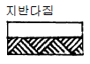
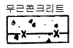
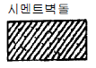
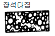
(정답률: 21%)
46. 모든 예술적, 조형적인 교육이론과 과학 기술적인 이론의 통합을 지향하여 하나의 통합된 예술로서의 건축과 인간 환경 창조에 목적을 둔 20세기의 헌신적 디자인 운동改의 대표는 다음 중 어느 것인가?
- 유겐트 쉬틸(Jugend stil)
- 쎄세션(Secession)
- 바우하우스(Bauhaus)
- 미술공예운동(Arts and Crafts Movement)
(정답률: 40%)
47. 다음은 정신물리학적 접근에 의한 경관분석 방법에 대한 설명이다. 잘못된 것은?
- 경관의 물리적구성 혹은 물리적요소가 인간에게 유발시키는 반응에 중점을 둔 접근법이다
- 물리적 인자와 반응사이의 관계를 주로 정량적 방법으로 기초하게 된다.
- 정신물리학적 접근을 위해서는 주로 전문가의 판단에 기초하게 된다.
- 경관의 형식미를 추구함에 있어 계량적 수단을 사용 한다.
(정답률: 38%)
48. 다음 평면도에 관한 설명 중 틀린 것은?
- 시공에는 직접 필요하지 않은 도면이다.
- 건물형태, 위치, 면적을 표시한다.
- 현지측량 도면을 기초로 하여 작성된다.
- 각종 수목의 배식계획을 표현한다.
(정답률: 59%)
49. 개념도의 표현에 있어 공간의 형태를 원형이나 원호로 한다면 이와 연관되는 공간개념은?
- 특정한 방향으로의 방향성을 의도한다.
- 다른 공간과의 유기적 연결성이 쉽게 확보된다.
- 면적감을 최소화하고자 한다.
- 내향적 이미지의 성격을 부여하고자 한다.
(정답률: 32%)
50. 공간분할에 관한 다음 설명 중 옳지 않은 것은?
- 바닥을 보는 시각을 대략 2등분하는 지점에 경계를 두면 효과적이다
- 공간분할을 의도할 때는 원칙적으로 그 재료를 달리 사용해야 한다
- 시각효과의 입장보다는 공간의 물리적 분할이 먼저 고려되어야 한다
- 나무로서 차폐효과를 내면 분리된 공간은 더 먼 느낌을 갖게 된다
(정답률: 49%)
51. 조경구성에 있어서 틀짜기(enframement)의 요령으로서 적합치 않은 것은?
- 틀의 구성시에는 그 경관의 양쪽 처리가 가장 중요하다.
- 틀을 구성하는 물체는 일반적으로 틀속의 그림과 같은 밝기가 되어야 한다.
- 틀짜는 요소는 다른 대상으로 부터 격리시켜야 좋다.
- 틀의 구성은 바람직하지 않은 대상이 보이는 것을 막아주어야 한다.
(정답률: 49%)
52. 야외 테니스코트 설계시 표면배수의 처리 방향 중 가장 옳은 것은?
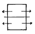
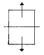
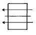
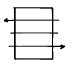
(정답률: 30%)
53. 포장의 표면배수 기울기를 특별히 규정하지 않은 경우에 원로, 보행자도로, 자전거도로 등의 기울기는 일반적으로 얼마를 적용하는가?
- 0.5 - 1.0 %
- 1.0 - 1.5 %
- 1.5 - 2.0 %
- 2.0 - 2.5 %
(정답률: 49%)
54. 자연환경의 지각에 가장 큰 역할을 하는 감각기관은?
- 시각
- 청각
- 취각
- 촉각
(정답률: 75%)
55. 시점(eye point)이 가장 높은 투시도는?
- 평행 투시도
- 조감 투시도
- 유각 투시도
- 입체 투시도
(정답률: 71%)
56. 보행전용도로 양쪽에 10m 높이의 건물을 신축하고자 한다. 이때 이 건물에 의해 위요되는 공간에 친밀한 성격을 부여하기 위해 띄워야 하는 거리의 범위는 어느 것이 가장 적당한가?
- 5m ∼ 10m
- 10m ∼ 30m
- 30m ∼ 60m
- 60m ∼ 80m
(정답률: 60%)
57. 다음 그림은 무엇을 설명하려는 그림인가?
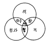
- 색광혼합
- 색료혼합
- 중간혼합
- 병치혼합
(정답률: 59%)
58. 어린이 놀이터의 설계시 원칙이라 할 수 없는 것은?
- 놀이터는 접근성이 좋은 곳에 입지 시키고 충분한 면적이 확보될 수 있어야 한다.
- 공간의 특성상 운동장의 구배는 1%를 초과해서는 안된다.
- 기존의 식생과 지형지모를 보존할 수 있는 방향으로 설치한다.
- 미관 증진 및 활동 통제와 교통 차단을 위하여 충분히 식재 하여야 한다.
(정답률: 59%)
59. 자연경관에서 가장 강하게 느껴지는 수평적 요소는?
- 논,밭
- 농촌주택
- 도로
- 저수지
(정답률: 45%)
60. 위쪽 방향을 상당히 제한하고 아래쪽을 주방향으로 한 것으로 자체에 공간을 연출하는 효과와 동시에 지상의 조명 효과를 얻을 수 있어 반짝거림과 동시에 노면의 밝기를 얻고자하는 공원. 광장. 보도 등에 적당한 배광곡선 형태는 어느 것인가?
- 전방향확산형
- 하방향주체형
- 하방향배광형
- 하∙횡방향확산형
(정답률: 35%)
4과목: 조경식재
61. 생태적으로 안정된 식생구조를 가진 조경 배식 예는?
- 조팝나무군락 + 무궁화나무군락 + 소나무군락
- 맥문동 + 조릿대군락 + 조팝나무군락
- 맥문동 + 개나리군락 + 왕벗나무군락
- 상수리나무군락 + 갈대군락 + 맥문동군락
(정답률: 50%)
62. 다음과 같은 경우에 식재 계획이 옳지 않은 것은?
- 공원이나 유원지에는 관목 군식(灌木群植)을 많이 하는게 좋다.
- 도심지에 식재되는 수종은 공해, 열, 바람, 척박 토양에 강해야 한다.
- 대학캠퍼스의 식재는 소교목혼식(小喬木混植)보다 대교목군식(大喬木群植)이 어울린다.
- 묘지공원의 식재는 비정형식재(非定形植栽)가 적합하다.
(정답률: 40%)
63. 바람이 심한 해안 가까이 조경공간을 구성하려고 할 때 적당한 수종은?
- 순비기나무,해송
- 소나무,자작나무
- 현사시나무,일본잎갈나무
- 오리나무,회양목
(정답률: 63%)
64. 식재설계에 있어서 중요한 것은 토양조건이다. 다음 중 좋은 토양조건이 아닌 것은?
- 좋은 토양구조와 토성을 지닌 혼합물
- 느슨하지 않고 쉽게 부스러지지 않는 토양
- 유기질과 양분함량이 높고, 물을 저류하거나 배수가 용이한 토양
- 산소함량이 지속적으로 높음과 동시에 식물생육에 적합한 pH를 지닌 토양
(정답률: 53%)
65. 다음 수종 중 배기가스에 강한 수목군으로 이루어진 것은?
- 고광나무, 고로쇠나무
- 호랑가시나무, 삼나무
- 태산목, 돈나무
- 매실나무, 자목련
(정답률: 25%)
66. 일반적인 식물의 천이(succession)과정은 다음과 같다. 옳게 짝지어진 것은?
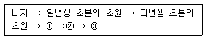
- ①양수의 교목림, ② 음수의 교목림, ③ 음수의 관목림
- ①음수의 교목림, ② 양수의 교목림, ③ 양수의 관목림
- ①음수의 교목림, ② 양수의 관목림, ③ 양수의 교목림
- ①양수의 관목림, ② 양수의 교목림, ③ 음수의 교목림
(정답률: 54%)
67. 다음 설명 중 잘못 설명한 내용은?
- 식물의 형태는 자생지의 지형적 특성과 관련이 깊다.
- 식물의 형태는 잔가지나 굵은 가지의 배열, 방향 그리고 선(線)에 의하여 결정된다.
- 원추형, 피라밋형의 수목은 주위에서 잘 안보이도록 주변 수목과 조화를 시켜 배식해야 한다.
- 수목의 기본 형태는 고유한 성장 습성에 따라 결정 된다.
(정답률: 53%)
68. 여름에 꽃이 피는 나무는?
- Lagerstroemia indica L.
- Cercis chinensis B.
- Cornus officinalis S.et Z.
- Magnolia denudata D.
(정답률: 45%)
69. 군집의 생태와 관련하여 종의 풍부도 경향을 설명한 것이다. 잘못된 것은?
- 종의 풍부도는 서식처의 복잡한 정도에 따라 증가 한다.
- 종의 풍부도는 지역의 규모에 따라 증가한다.
- 한 지역에서 종의 풍부도는 종의 지리적 근원지에 가까울수록 증가한다.
- 종의 풍부도는 고위도에서 증가한다.
(정답률: 63%)
70. 잔디를 경사면 전체에 피복하여 침식으로 부터 보호하려고 한다. 이 공법을 무엇이라 하는가?
- 평떼붙이기(張芝工)
- 줄떼붙이기(芝條工)
- 식생반공(植生盤工)
- 식생대공(植生袋工)
(정답률: 34%)
71. 건물과 관련된 식재기법에서 교목을 위주로하여 전체적인 건물과의 균형을 고려해야 하므로 수종선정과 식재 위치 선정에 세심한 주의가 필요한 것은?
- 초점식재
- 모서리식재
- 배경식재
- 가리기식재
(정답률: 14%)
72. 다음 그림은 묘목을 정 3각형으로 식재하는 경우이다. 묘목간의 거리가 2m인데 이때 줄(列)사이의 거리 W는 약 몇 m로 되는가?
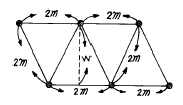
- 2.1
- 1.9
- 1.7
- 1.5
(정답률: 41%)
73. 광화학스모그인 옥시던트는 오존, PAN 등의 혼합물이다. 옥시던트에 의해 식물에 나타나는 피해를 일으키는 것 중 대표적인 것은?
- 잎뒤가 은백색으로 변함
- 엽록소의 파괴
- 잎선단부의 윤상 반점
- 잎표면의 각피가 얇아짐
(정답률: 43%)
74. 고속도로 식재의 기능과 분류를 한 것 중 틀린 것은?
- 사고방지 기능: 차광식재, 명암순응식재
- 경관처리 기능: 차폐식재, 법면보호식재
- 휴식 기능: 녹음식재, 지피식재
- 환경보전 : 방음식재, 임연(林緣)보호 식재
(정답률: 46%)
75. 후박나무의 학명은?
- Magnolia kobus DECANDOLLE
- Magnolia obovata THUNB
- Magnolia grandifloxa L.
- Machilus thunbergii SIEB. et ZUCC.
(정답률: 38%)
76. 디자인 요소 중 질감에 있어서 시각적 뚜렸감(visual energy)이 가장 낮은 것은?
- 강한 질감
- 중간정도 강한 질감
- 중간정도 섬세한 질감
- 섬세한 질감
(정답률: 59%)
77. 개화기가 순서대로 되어 있는 것은?
- 수수꽃다리→ 수국→ 배롱나무→ 금목서
- 수국→ 배롱나무→ 수수꽃다리→ 금목서
- 수수꽃다리→ 배롱나무→ 수국→ 금목서
- 수국→ 수수꽃다리→ 배롱나무→ 금목서
(정답률: 41%)
78. 쓰레기 매립지인 서울난지도에 성토를 한 후 초기에 침입하는 수종은 생장률과 번식율이 높은 성질이 나타나는 도태압의 효력이 나타난다. 이에 적당한 수종은?
- 졸참나무
- 버드나무
- 서어나무
- 산딸나무
(정답률: 43%)
79. 자유식재수법에 해당하는 것은?
- 교호식재
- 사실적식재
- 루바형식재
- 램던형식재
(정답률: 18%)
80. 다음 중 척박한 토양에 잘 견디는 수종으로 짝지은 것은?
- 소나무, 해송
- 삼나무, 낙우송
- 느티나무, 느릅나무
- 오동나무, 가시나무
(정답률: 56%)
5과목: 조경시공구조학
81. 도로의 폭원(幅員) 요소 중 자동차의 속도를 내기 위해 횡방향에 여유를 두거나 도로표지 및 전주 등의 노상시설을 위해 설치하는 것은?
- 노상시설대(street strip)
- 분리대(median strip)
- 길어께(shoulder)
- 보도
(정답률: 52%)
82. 다음 수문 방정식(유입량=유출량+저류량)에서 유출량 부문에 속하는 항목이 아닌 것은?
- 지표유출량
- 지하유출량
- 강수량
- 증발량
(정답률: 71%)
83. 다음의 건설재료 중에서 단위 m3당 중량(重量)이 가장 큰것은 어느 것인가?
- 철근 콘크리트
- 화강석
- 자갈
- 목재
(정답률: 57%)
84. 다음은 잡철물 제작 설치에 대한 품셈기준 설명이다. 적합하지 않은 것은 어느 것인가?
- 소요 강재의 총중량을 산출하여 적용한다
- 기계 기구 손료는 재료비의 3%를 계산한다
- 복잡한 구조물의 설치는 기본 품셈의 140%를 계상 한다
- 철물제작 설치에 있어 비계설치가 필요하면 비계공을 별도 계상한다
(정답률: 28%)
85. 다음 중 진흙의 전단력을 판별하는 시험은?
- 베인테스트
- 지내력시험
- 표준관입시험
- 삼축압축시험
(정답률: 24%)
86. 공사 현장내에서 표준품셈에 규정하고 있는 소운반거리는 다음 중 어느 것인가?
- 수평거리 20m 이내의 운반거리
- 수평거리 50m 이내의 운반거리
- 수직고 20m 이내의 운반거리
- 수직고 10m 이내의 운반거리
(정답률: 57%)
87. 시공계획을 세우는 목적이 아닌 것은?
- 최소의 비용으로 시공하여 경제성을 극대화하기 위하여
- 최대한 인원을 동원하여 조기에 완공하기 위하여
- 시공 품질을 정해진 수준으로 달성하기 위하여
- 시공을 안전하게 수행하기 위하여
(정답률: 68%)
88. 흙을 높이 쌓아 두면 미끄러져 내려와 경사면이 안정 되는데 이 경사면의 각도를 무엇이라 하는가?
- 마찰각(摩擦角)
- 내부 마찰각
- 전도각(轉倒角)
- 휴식각(休息角)
(정답률: 63%)
89. 다음 그림의 옹벽에 관한 사항 중 옳은 것은?
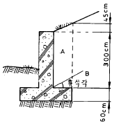
- 무근 콘크리이트 구조이다.
- 4m 이하의 높이에 유리한 구조다.
- 하중은 옹벽높이 1/3지점인 1.2m 지점에 수평방향으로 작용한다.
- 켄티레버옹벽으로 중력식 옹벽보다 구조상 유리한 단면이다.
(정답률: 47%)
90. 정지설계도(整地設計圖)의 작성 원칙 중 틀린 사항은?
- 관습적으로 파선(破線)은 제안된 등고선을 나타낸다.
- 등고선은 자연스럽게 그리는 것이 바람직하다.
- 점고저(spot elevation)는 등고선만으로 이해 할 수 없는 지점표기에 사용한다.
- 해당 부지의 소유 경계선을 넘지 않도록 한다.
(정답률: 55%)
91. 살수반경이 4m 되는 살수기를 2.8m 간격으로 배치하였다. 삼각형 배치방법으로 설치한다면 열과 열사이 거리는 얼마가 적당한가?
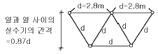
- 1.6 m
- 1.8 m
- 2.2 m
- 2.4 m
(정답률: 59%)
92. Bar Chart식 공정표를 작성하는 순서가 올바른 것은?
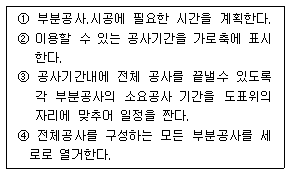
- ②-④-①-③
- ④-②-①-③
- ①-②-③-④
- ②-④-③-①
(정답률: 24%)
93. 벤치를 설치하기 위하여 기초부터 터파기량을 계산하니 1.2m3이고 구조부 체적은 0.8m3였다. 되메우기한 후 흙다지기를 할 때 토량변화율을 고려한다면 잔토처리량은 얼마인가? (단, 토량변화율 C=1.0 이고, L=1.2 이다.)
- 0.40m3
- 0.80m3
- 0.84m3
- 0.96m3
(정답률: 24%)
94. 다음은 힘의 모멘트를 나타낸 것이다. 힘의 0점에 대한 모멘트값은 어느 것인가?
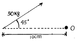
- 353.5 Kgf · cm
- 250 Kgf · cm
- 500 Kgf · cm
- 707 Kgf · cm
(정답률: 19%)
95. 200cd 광도를 가진 광원이 높이 10m에서 비추고 있다. 광원에서 45° 로 비치는 지점에서의 수평면의 조도는 몇 Lux 인가? (단,
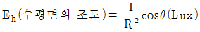
)- 1/2 Lux
- 10 Lux
- 2√2 Lux
- √2 Lux
(정답률: 14%)
96. 다음은 힘에 관한 설명이다. 틀린 것은?
- 힘은 크기, 방향 및 방위, 작용점의 3요소로써 표시한다.
- 힘은 합성과 분해를 할 수 있다
- 모멘트(M)는 힘(P)과 힘까지의 거리의 관계(d) 이며 M = P · d2으로 표시한다.
- 힘은 중력단위로 표시한다.
(정답률: 55%)
97. 적산할 경우 수량의 환산 기준 중에서 틀린 사항은?
- 수량은 C.G.S 단위를 사용한다
- 수량의 단위 및 소수위는 표준품셈 단위 표준에 의한다
- 수량의 계산은 지정 소수위 이하 1위 까지 구하고 끝수는 무시한다
- 계산에 쓰이는 분도(分度)는 분까지, 원둘레율(圓周率)의 유효숫자는 3자리로 한다
(정답률: 61%)
98. 조경구조물 시공순서 중 맞는 것은?
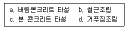
- a-d-b-c
- d-b-a-c
- a-b-d-c
- b-d-a-c
(정답률: 42%)
99. 주차장에 대한 설명 중 잘못된 것은?
- 직각주차는 동일 면적에 가장 많은 주차를 할 수 있다.
- 종단구배 4%이상 되는 도로에는 노상주차장을 설치 수 없다.
- 단지의 미적 측면에서 대규모 주차장이 유리하다.
- 노상주차시 일반적으로 평행주차가 유리하다.
(정답률: 56%)
100. 콘크리트의 반죽질기의 정도에 따라 작업의 난이도 정도 재료분리의 다소 정도를 나타내는 굳지 않은 콘크리트의 성질을 나타내는 용어는?
- 컨시스턴시(consistancy)
- 워커빌리티(workability)
- 플라스티시티(plasticity)
- 피니셔빌리티(finishability)
(정답률: 67%)
6과목: 조경관리론
101. 꼬리좀벌, 노랑 꼬리좀벌, 상수리좀벌, 큰다리 남색좀벌 등이 천적인 해충은?
- 밤나무혹벌
- 소나무좀
- 솔잎혹파리
- 측백하늘소
(정답률: 50%)
102. 조경수목의 생육에 중대한 영향을 미치는 오염물질이 아닌 것은?
- 아황산가스(SO2)
- 불화수소(HF)
- 옥시탄트(오존, PAN)
- 이산화탄소(CO2)
(정답률: 59%)
103. 자연공원지역에서 제반 관리적 상황의 파악을 위한 적정 모니터링시스템이 갖춰야할 사항에 해당하지 않는 것은?
- 영향을 유효 적절히 측정할 수 있는 지표의 설정
- 신뢰성 있고 민감한 측정의 기법 적용
- 고비용의 정확한 측정모델의 선정
- 측정 단위들의 합리적 위치 설정
(정답률: 32%)
104. 공원에 의자를 설치하고 준공하였다. 시공상의 하자가 닌 것은?
- 의자가 흔들린다.
- 목재부위가 불에 타서 훼손되였다.
- 의자가 기울어져 있다.
- 옹이가 있어 목재가 부러졌다.
(정답률: 64%)
1⑤. 잔디에 뗏밥을 주는 작업을 무엇이라 하는가?
- 통기작업(core aerification)
- 슬라이싱(slicing)
- 버티컬모잉(vertical mowing)
- 배토(topdressing)
(정답률: 56%)
106. 다음 중 동절기 공사의 일반 주의사항이 아닌 것은?
- 영하의 기온에서 모든 공사는 공법 및 가열보온 조치를 확인 후 시행한다.
- 영상일지라도 기온이 점차 강하할 때는 양지 및 내부공사를 먼저 시행한다.
- 동해 발생 우려시는 적절한 보온조치 필요하다.
- 각종 통로의 미끄럼 방지 시설 및 화재발생 취약지구 확인한다.
(정답률: 71%)
107. 그림의 공기 건설비 곡선에서 어느 점에 해당하는 공기가 최적공기인가?
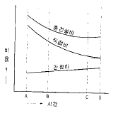
- A
- B
- C
- D
(정답률: 59%)
108. 줄기감기 양생을 필요로 하지 않는 나무는?
- 노쇠목이나 내한성이 약한 나무
- 가지나 잎의 제거가 많은 이식 수목
- 수간이 곧고 수피가 두꺼운 나무
- 수간이 노출되어 일소, 동해의 우려가 있는 나무
(정답률: 58%)
109. 다음 중 방충 개미 예방에 특히 유효한 목재 방충제는?
- 유기염소계통
- 크롤 나프탈렌
- 붕소계통
- 불소계통
(정답률: 25%)
110. 그림의 네트워크에 관한 기술 중 틀린 것은?
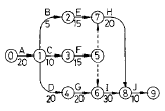
- 결합점 마에서의 최지완료 시각은 45일이다.
- 결합점 막에서의 최지완료 시각은 70일이다.
- 결합점 만에서의 최조개시 시각은 60일이다.
- 전체공기는 100일이다.
(정답률: 22%)
111. 연중 유지관리계획에서 다음 중 가장 먼저 시행하여야하는 유지관리 항목은 어느 것인가?
- 기비(基肥)
- 추비(追肥)
- 제초(除草)
- 월동준비(越冬準備)
(정답률: 41%)
112. 설치비는 비싸나 유지관리비가 싸며 열효율이 높고 투시성이 뛰어난 등은?
- 나트륨등
- 금속 할로겐등
- 수은등
- 형광등
(정답률: 32%)
113. 조경공사 시방서상 수목의 관수 횟수는 연간 몇 회인가?
- 연 3회이며, 장기 가뭄 시에는 추가 조치한다.
- 연 5회이며, 장기 가뭄 시에는 추가 조치한다.
- 연 7회이며, 장기 가뭄 시에는 추가 조치한다.
- 연 10회이며, 장기 가뭄 시에는 추가 조치한다.
(정답률: 46%)
114. 다음 식물병 중에서 마이코플라스마(파이토플라스마)에 의한 병이 아닌 것은?
- 대추나무 빗자루병
- 오동나무 빗자루병
- 벚나무 빗자루병
- 뽕나무 오갈병
(정답률: 49%)
115. 공원시설의 파괴 및 훼손과 관련된 용어는?
- 과밀이용(overuse)
- 수용능력(carrying capacity)
- 님비(NIMBY)현상
- 반달리즘(vandalism)
(정답률: 49%)
116. 화훼류의 내한성에 관한 설명 중 가장 옳은 것은?
- 온도 변화에 관계없이 같은 품종이면 내한성은 같다.
- 온대산인 품종이 아열대 원산 품종보다 내한성이 약하다.
- 재배지가 남부지방인 것이 중북부지방보다 내한성이 강하다.
- 추파 일년초나 추식 구근인 경우는 대부분 저온을 거쳐야 한다.
(정답률: 49%)
117. 근로재해의 강도율(强度率)을 나타내는 수식은?
- 근로재해에 의한 사상자수 / 근로총시간수 × 1,000
- 근로손실일수 / 근로총시간수 × 1,000
- 년간근로재해에 의한 사상자수 / 재적 근로자수 × 1,000
- 근로손실일수 / 재적근로자수 × 1,000
(정답률: 21%)
118. 조경수목의 유지관리를 위한 전정방법으로 적절하지 못한 것은?
- 수목의 지엽이 지나치게 무성하면 한계전정으로 가지를 정리한다.
- 철쭉류나 목련류 등의 화목류는 낙화직후에 춘계 전정한다.
- 이식 전에는 단근된 지하부와의 균형을 위해 굵은 가지를 친다.
- 소나무류는 윤생지의 발생을 위해 가을철에 순꺾기를 한다.
(정답률: 35%)
119. 다음 조경관리 업무 중 도급 방식을 취하는 것이 유리한 것은?
- 재빠른 대응이 필요한 업무
- 일상적인 유지관리업무
- 규모가 크고 전문적 지식이 요구되는 업무
- 연속해서 행할 수 없는 업무
(정답률: 56%)
120. 수용능력(carrying capacity)의 개념을 최초로 종래의 생태적측면에서 이용자의 레크레이션 질 및 만족도 등의 사회· 심리적측면으로까지 확대 발전시킨 사람은?
- Lucas
- J.V.K Wagar
- Lapage
- O'Riordan
(정답률: 64%)